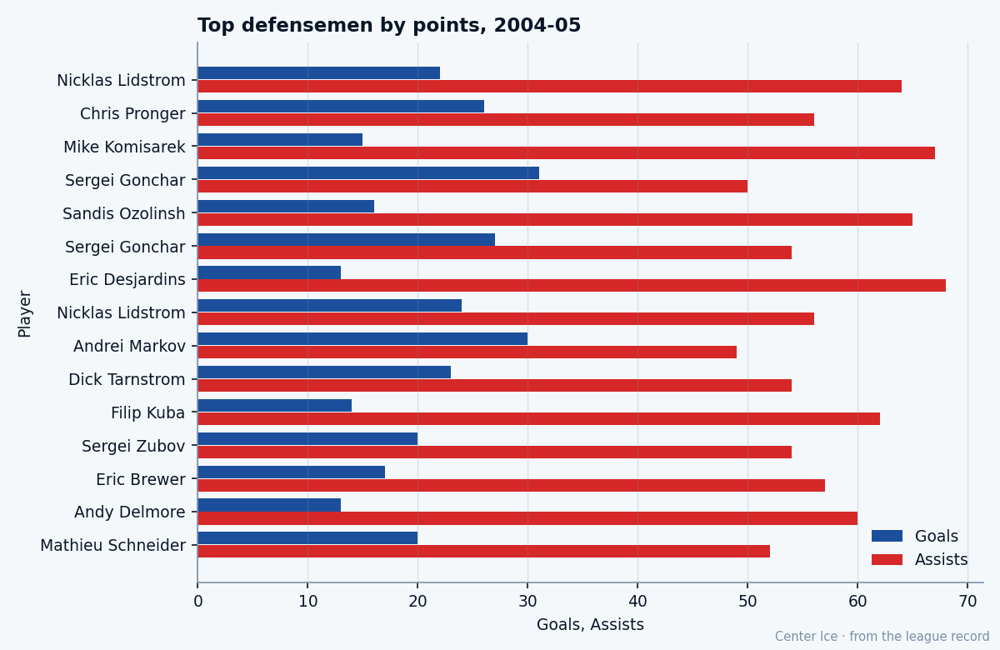

24 to 82: Mike Komisarek went from 3 points to third among defensemen, on a club that won 21 games
The 7th pick from 2001 played 24 games and scored 3 points last season. This season he plays 30.4 minutes a night and scores 82 points for a team with 66 points.
 Tomáš VránaProfile writer · The Sweater
Tomáš VránaProfile writer · The SweaterLast April, Mike Komisarek82 finished his second NHL season with 1 goal, 2 assists, and 11.8 minutes a night across 24 games. He was a depth defenseman on a  Montreal Canadiens club that missed the playoffs by 48 points, and nobody in that building expected the next number to be anything but another modest bump.
Montreal Canadiens club that missed the playoffs by 48 points, and nobody in that building expected the next number to be anything but another modest bump.
This April, Komisarek finished with 15 goals, 67 assists, 82 points, and 30.4 minutes a night. He played all 82 games. His 82 points put him third among defensemen in the league, behind a Detroit defenseman at 86 and a St. Louis defenseman at 82. He reached that mark for a club that won 21 games and finished last in the Northeast Division with 66 points.

The road from West Islip
Komisarek grew up in West Islip, New York, on Long Island. He played youth hockey through the Suffolk PAL organization, then two years of varsity hockey at St. Anthony's High School. After that came the New England Jr. Coyotes of the Eastern Junior Hockey League, then USA Hockey's National Team Development Program, then two seasons at the University of Michigan where he compiled 46 points and 145 penalty minutes in 80 games, won a CCHA title, and earned First Team Division I All-American honors in 2002.
The Canadiens took him seventh overall in 2001. He signed on July 24, 2002, and played his first NHL game that season. The record shows him on Montreal's books from the day it opened in December 2004. He has been a Canadien since he was 20 years old, and the first two seasons gave the club 28 games and 5 points to work with.
What the Book says, what the ice says
The Bureau's Development Index has Komisarek at +6 this season, one of five players at that number alongside  Marian Gaborik98,
Marian Gaborik98,  Mike Cammalleri83,
Mike Cammalleri83,  Vaclav Nedorost78, and Pierre-Marc Bouchard77. His base grade sits at 77. His current overall reads 82. His published potential is 92, which puts him 10 grades below his ceiling at 23 years old.
Vaclav Nedorost78, and Pierre-Marc Bouchard77. His base grade sits at 77. His current overall reads 82. His published potential is 92, which puts him 10 grades below his ceiling at 23 years old.
The per-attribute grades tell you what kind of defenseman he is. His checking reads 92, the highest number on his card. Speed reads 89. Aggression reads 88. Puck handling reads 88. Shooting power reads 87. Pass reads 85. His fighting grade reads 51, his one-timer 52, his defensive awareness 55. He hits everything that moves and will not drop the gloves. He plays 30.4 minutes a night in a league where the top centers play 22 or 23.
A man with 92 checking and 51 fighting is a defenseman who finishes his hits and stays in the play. The 67 assists point to a defenseman who carries the puck out and finds the second man. Fifteen goals on a club that scored 238 all season mean he shows up at the other end too.
The contract
Komisarek earns $1.10M with 1 year left on his deal. The cost per point this season, from the Bureau's own arithmetic, comes to $13,415. The defenseman ahead of him at 86 points played for Detroit, which won 35 games. The defenseman tied with him at 82 played for St. Louis, which won 26. Komisarek's 82 were on a Montreal club that won 21 and let in 295 goals.
 Jose Theodore91 played 73 games in net for that team.
Jose Theodore91 played 73 games in net for that team.  Richard Zednik85 scored 114 points at right wing.
Richard Zednik85 scored 114 points at right wing.  Jan Bulis80 added 80 at left wing. The room around Komisarek had enough offense to score 238 goals, which ranked above only Buffalo, Columbus, Chicago, and San Jose. The goaltending and the defensive structure underneath him could not hold what the forwards built. He put up his 82 points anyway, 30.4 minutes a night, in every situation that mattered.
Jan Bulis80 added 80 at left wing. The room around Komisarek had enough offense to score 238 goals, which ranked above only Buffalo, Columbus, Chicago, and San Jose. The goaltending and the defensive structure underneath him could not hold what the forwards built. He put up his 82 points anyway, 30.4 minutes a night, in every situation that mattered.
What the room says
A player who goes from 24 games and 11.8 minutes to 82 games and 30.4 minutes is the one on the ice when the bench runs dry. The Montreal roster was thin all winter. Komisarek morale reads 94, a division winner's number from a locker room that lost 46 games. The room knows what it has: the 66 points are not on him, and the 82 points are.
What does Montreal do with a 23-year-old who just scored 82 points on a 21-win team at $1.10M with 1 year left? The base grade of 77 says the Index will come down. The potential of 92 says it might not. The 10-grade gap between current and ceiling is the largest any defenseman on this list carries, and at 23, he has time to close it or to fall back into it.
What the calendar shows is a rookie draft on June 8 and free agency closing on July 28. Komisarek will be a restricted free agent by then, if the club extends a qualifying offer. The Bureau's Development Index will settle, and the base grade will become the number that starts the conversation. At 77, Montreal pays him like a second-pairing defenseman who had one good year. At 82, they pay him like a top-four defenseman with 15 goals and 67 assists. At 92, they pay him like the best defenseman on the team.
He turns 24 in January. He has been in the league 3 seasons. His first 2 gave him 28 games and 5 points. The third gave him everything else.